La Mercedes-Benz Classe S est depuis plus de trente ans le vaisseau amiral de Mercedes-Benz. La Classe S a toujours été la représentante du savoir-faire de Mercedes-Benz, que ce soit du point de vue de la technologie, du confort ou de la qualité de fabrication. Avec cette Nouvelle Classe S, Mercedes-Benz ne déroge pas à la règle. La Nouvelle Classe S fait le plein de nouvelles technologies inédites et gagne en modernité.
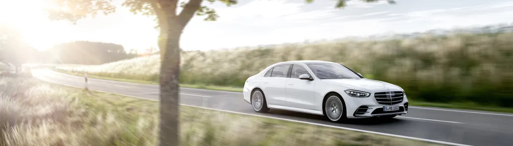La Nouvelle Mercedes-Benz Classe S se métamorphose et préfère un design unique plus fluide et plus dynamique en respectant les derniers codes stylistiques de Mercedes-Benz. Ainsi, la face avant de la Nouvelle Classe S profite de phares plus étirés ainsi que d'une prise d'air traversante unique et large sous la majestueuse calandre. Ce triptyque apporte un savant mélange de dynamisme et d'une légère agressivité sur le marché des berlines de luxe.
La face arrière, quant à elle, évolue en conséquence et abandonne ses feux verticaux ovoïdes. Place désormais à de longs feux horizontaux et anguleux. Ceux-ci s'inspirent des feux de la CLS et permettent ainsi de dynamiser très fortement l'arrière de la Nouvelle Classe S. Pour autant, la Classe S parvient à conserver la sobriété et l'élégance recherchée dans une grande berline statutaire. La Nouvelle Classe S devient une alternative unique.
| 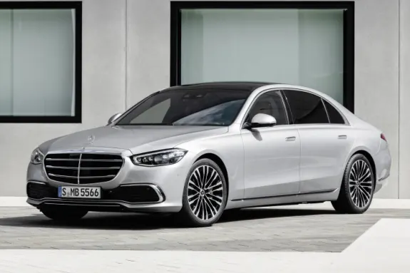 | 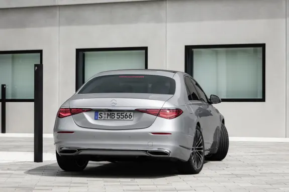 |
Cette nouvelle robe s'accompagne d'une augmentation des dimensions de la Classe S. En longueur, la Nouvelle Classe S gagne 6 cm en version courte et 4 cm en version longue pour atteindre respectivement 5,17 m et 5,29 m. Cela permet d'augmenter l'empattement (distance entre les roues avant et arrière) et donc l’habitabilité à bord de la Classe S.
De profil, nous remarquons que la Nouvelle Classe S arbore des poignées affleurantes et rétractables mais aussi que la chute de pavillon est plus importante qu'avant. Cela donne l'impression de se trouver face à une berline plus dynamique que la précédente génération. D'ailleurs, preuve de son dynamisme, la nouvelle Classe S profite d'une excellente aérodynamique puisque son Cx (coefficient de trainée aérodynamique) n'est que de 0,22 ! Un véritable de gage de confort auditif.
| 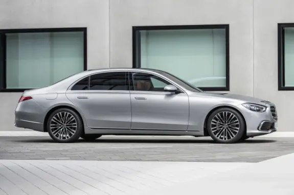 | 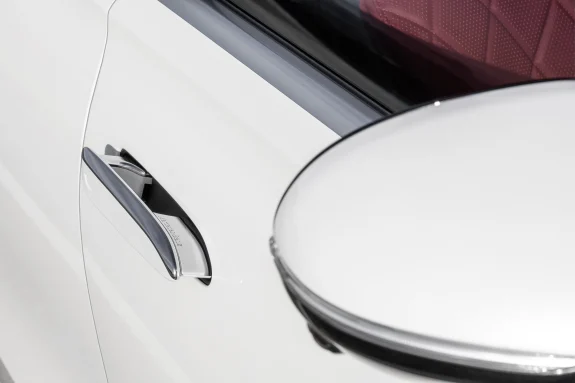 |
La Nouvelle Classe S révolutionne réellement son intérieur ! L'habitacle de la Nouvelle Classe S change radicalement et arbore désormais un style résolument moderne et ultra-technologie. Dorénavant, la planche de bord de la Mercedes-Benz Classe S sera épurée et rectiligne. Pour autant, l'habitacle est toujours aussi haut de gamme avec de magnifiques combinaisons de cuir, d'aluminium, de carbone, d'Alcantara, de bois... Vous vous installerez toujours dans un cocon ultra luxueux.
| 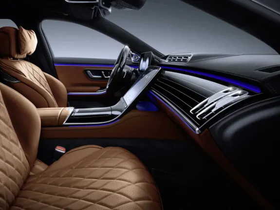 | 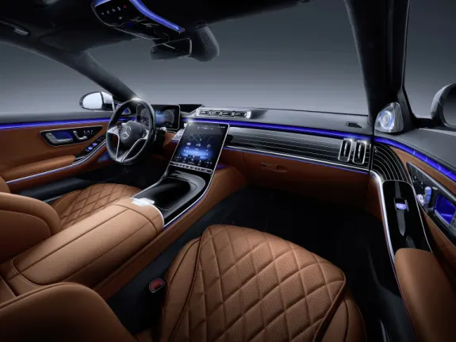 |
l'habitacle de la Nouvelle Mercedes-Benz Classe S pourra héberger jusqu'à 5 écrans et chacun d'entre eux pourra profiter de l'interface MBUX. Cette armada d'écrans est articulée autour d'un écran central vertical de 12,8 pouces. Celui-ci profite de la technologie d'éclairage OLED vous garantissant une image sublime avec des couleurs chatoyantes et un contraste infini. Cet écran pourra réagir à vos interactions avec un retour haptique simulant l'appui sur un bouton.
Derrière le volant, vous pourrez profiter d'un écran avec une diagonale de 12,3 pouces à affichage 3D. Il vous permettra de bénéficier d'une représentation claire et spatiale de la situation routière, des autres usagers de la route ainsi que des avertissements et des instructions de navigation. Bien entendu, cet écran est 100% personnalisable.
Les passagers arrière pourront profiter de 3 écrans : vous y trouverez deux écrans haute définition de divertissement derrière chaque siège avant. Ils seront parfaits pour vous procurer un environnement de travail exceptionnel avec notamment un accès à internet et au système multimédia.
| 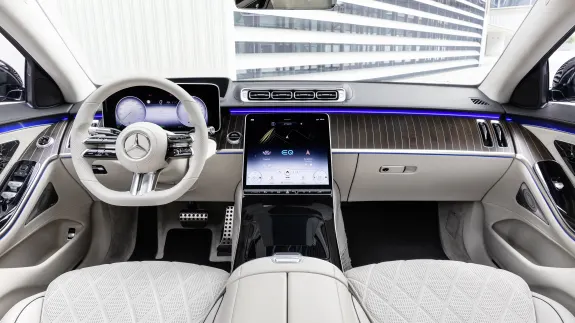 | 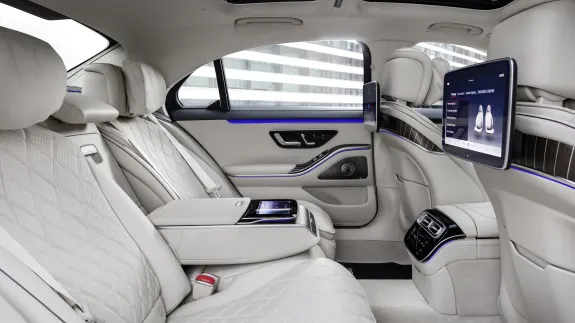 |
Pour que l'ergonomie des places situées à l'arrière de votre Nouvelle Classe S soit optimale, tant du point de vue de la relaxation que de celui d'un bureau mobile, vous trouverez une tablette arrière dans laquelle est logée une tablette de 7 pouces. Cette tablette pourra gérer tous les dispositifs de confort de la Nouvelle Classe S.
Tout comme la précédente Classe S, la Nouvelle Classe S profite d'un éclairage d'ambiance personnalisable extrêmement poussé. Celui-ci est désormais intégré aux systèmes d'assistance à la conduite et peut renforcer visuellement leur perception
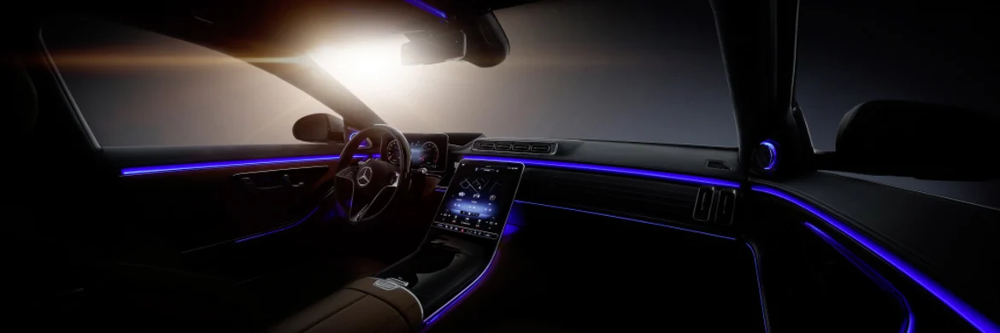La Nouvelle Mercedes-Benz Classe S est la vitrine technologique de la marque à l'étoile. Elle profite aujourd'hui de technologies uniques que ce soit pour le confort ou la sécurité du conducteur et des passagers.
L'assistant vocal et son intelligence artificielle sont désormais couplés à des caméras au plafond de la Nouvelle Classe S capables d'analyser l'environnement de l'habitacle et surtout d'interpréter les mouvements des passagers. Vous pourrez ainsi contrôler votre Classe S avec des mouvements. Par exemple, vous pourrez ouvrir ou fermer le toit ouvrant d’un simple mouvement de main affleurant le pavillon.
Bien évidemment, la conduite semi-autonome n'est pas oubliée. Avec le nouveau système Drive Pilot, Mercedes-Benz affirme qu'au deuxième semestre 2021, la Classe S pourra circuler en conduite autonome niveau 3. Le conducteur pourra donc pleinement se reposer dans certaines situations comme dans un embouteillage par exemple.
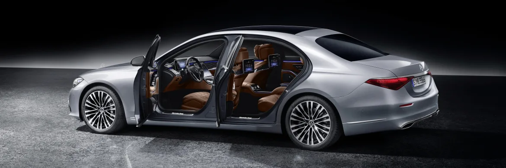